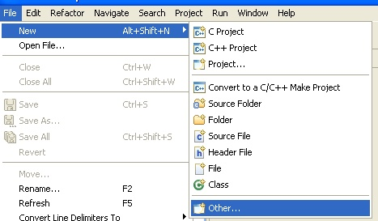
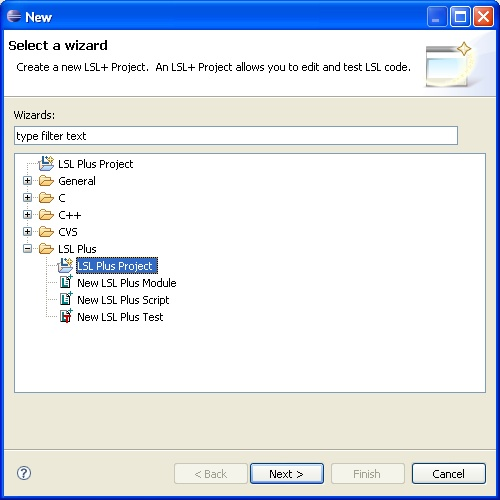

To use the plugin, you need to create an LSLForge project.
Select File -> New -> Other...,
which will bring up the "New" wizard,
which prompts you to select a wizard. Under the "LSLForge" folder is the "LSLForge Project" wizard. Select this and click "Next".

On the next page, enter a name for your project (e.g. "myproject"), and click "Finish". Eclipse will switch into the "LSLForge Perspective" which you may not notice, but looks like this:

You should have the "Navigator" view on your display, and it should show your new LSLForge project. The project folder will be decorated with a wee "L" to indicate that it is indeed an LSLForge project.
Now you can add LSLForge scripts and other LSLForge files to your project.
There are four basic types of files that you can create within an LSLForge project (that LSLForge knows or cares about). These are module files, script files (discussed here) as well as unit test files and Sim Project files. Unit test files allow the specification of unit tests to exercise LSL code fragments (handlers and functions). Sim Project files allow you to create complex environments, with objects, avatars, and running scripts, to allow you to test multiple scripts interacting with their environment and each other.
The LSLForge script/module editor does syntax highlighting, supports term completion (LSL keywords, built in functions, built in constants), and supports 'check-as-you-type' editing, showing errors in your source code as you update the file in the editor. The editor also supports the Eclipse outline view (to enable 'check-as-you-type', you must open the outline view). To open the outline view, you use the 'Window -> Show View' command: